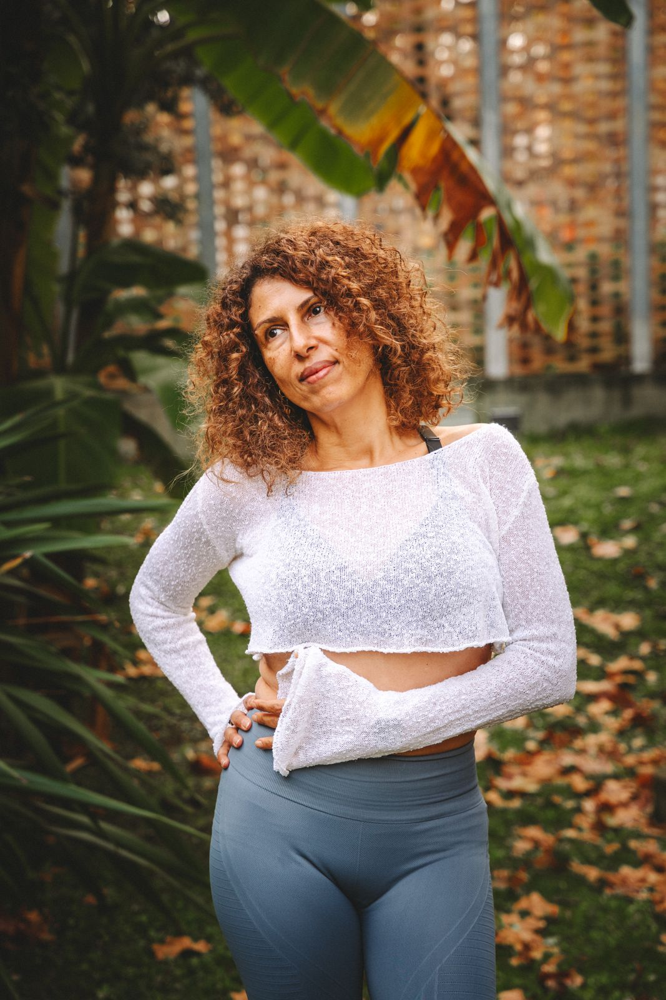
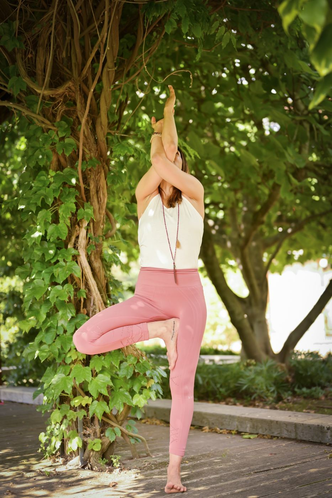
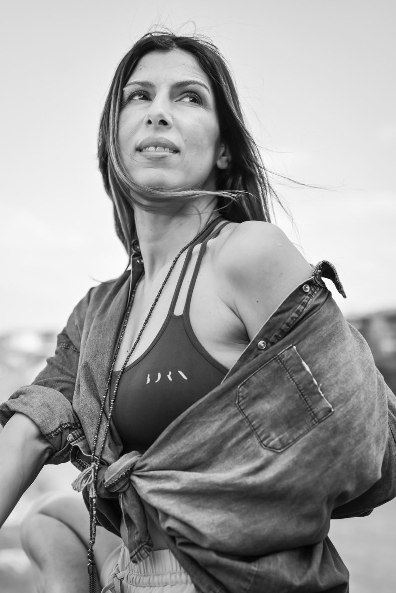
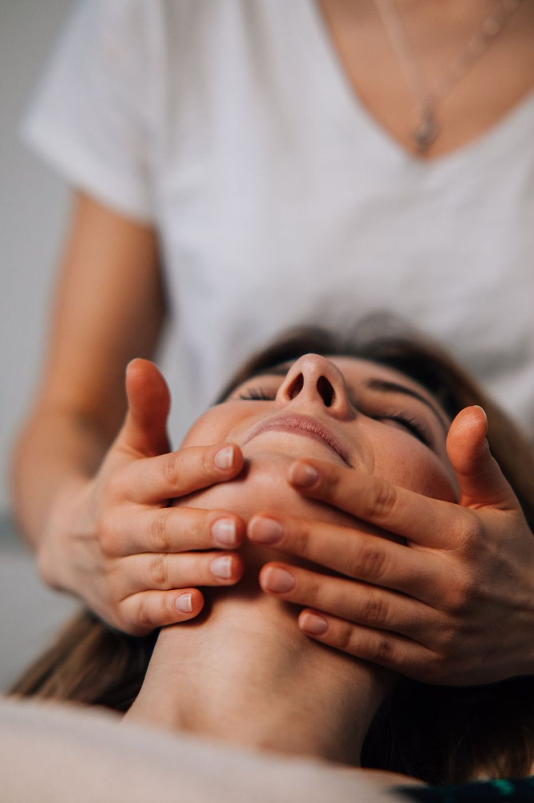
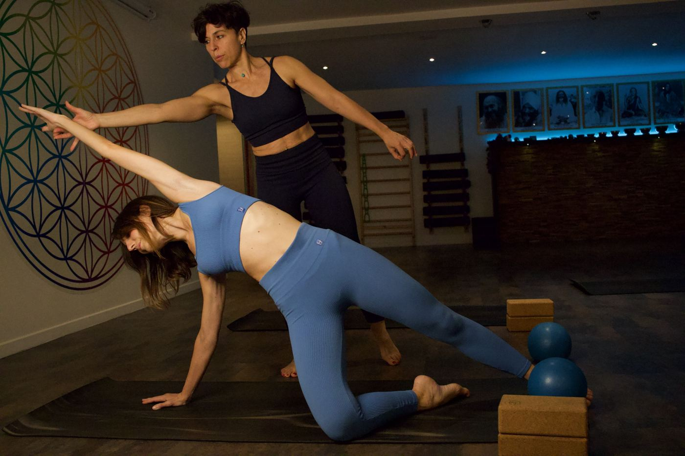
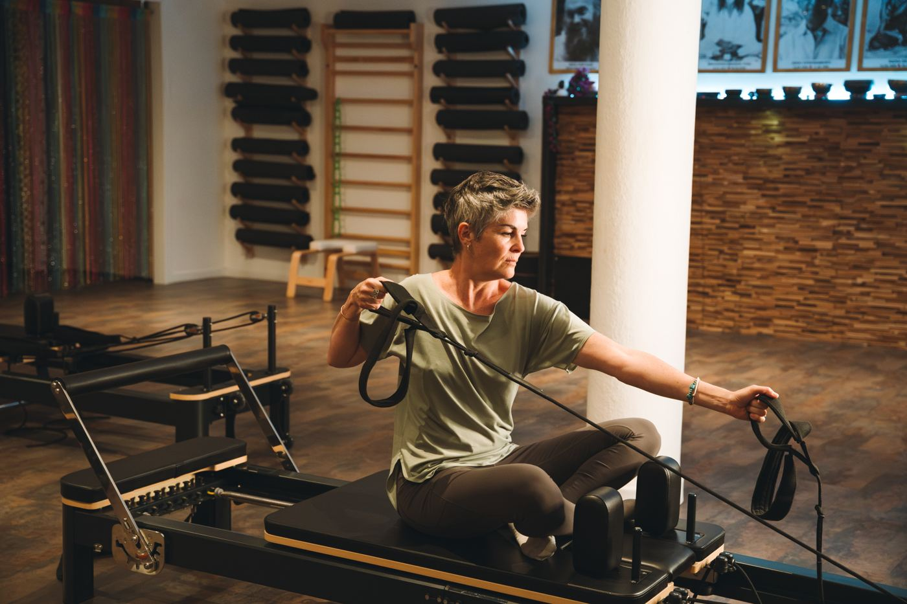
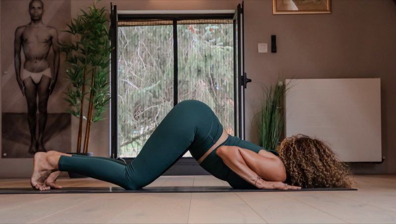
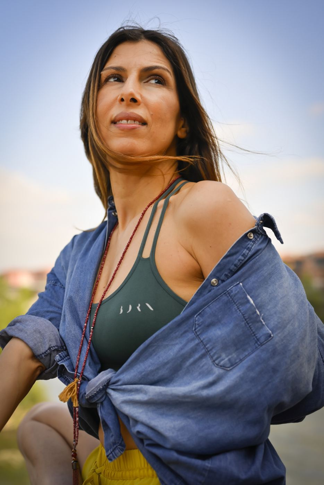

Soins énergétiques, Kobido, Pilates et cours individuels de Réformer, dans une maison d'hôtes chaleureuse à Campan, à quelques minutes de Bagnères-de-Bigorre et à portée de Tarbes, de Lourdes et de toute la vallée de l'Adour.
Réserver un momentDécouvrir les soins
Un lieu pour souffler, loin du bruit, et des soins qui prennent le temps de t'écouter.
Une maison de montagne à 1 000 mètres d'altitude, avec une grande terrasse face aux montagnes et une salle de yoga lumineuse.
Chaque rendez-vous est individuel. On prend le temps d'échanger avant, de t'écouter et d'adapter le soin à ce que tu vis.
Soins énergétiques, Kobido, Pilates, Réformer et stages : tu peux combiner plusieurs rendez-vous dans la même journée, ou prolonger par une nuit sur place.
Des rendez-vous individuels, sur place à Campan ou à distance. Faty est formée aux méthodes de Sylvain Mira (Qi-Praticien, puis Synergie et Symbionergie en 2027).
Un soin d'une heure pour relâcher les tensions, libérer les émotions et recharger l'énergie, en passant par les cinq corps (physique, émotionnel, mental…). Possible à distance.

Un bilan énergétique puis une harmonisation de l'ensemble de ton être, pour retrouver calme, légèreté et équilibre.
Un accompagnement approfondi pour déposer les peurs, les angoisses et les schémas qui se répètent, avec des outils de relaxation, de coaching et de travail sur l'histoire familiale.

Une lecture globale de ce que vous traversez (corps, émotions, histoire personnelle) pour savoir par où commencer, puis un soin ciblé. Une méthode pour aller plus loin.
Ces accompagnements sont des soins de bien-être. Ils ne remplacent ni un diagnostic ni un suivi médical.
Le massage japonais du visage.

Massage japonais du visage, doux et profond : détente, éclat de la peau et sensation de visage reposé.
Renforcer, assouplir, mieux se tenir. Des cours à Campan, à votre rythme.

Un travail précis du centre du corps, du souffle et de la posture, adapté à votre niveau.

Des séances particulières sur Réformer, construites autour de vos besoins : dos, posture, tonus, récupération.
Ma maison d'hôtes à Campan, à 1 000 mètres d'altitude. Des week-ends du vendredi au dimanche en petit groupe (8 personnes hébergées au maximum), en pension complète végétarienne, bio et locale.

Quatre jours pour se ressourcer au changement de saison.
Pour les professeurs de yoga (diplôme ou justificatif demandé).
Pour les professeurs de yoga qui veulent développer leur activité.
Une semaine animée par Faty : souffle, mouvements dynamiques, chant et méditation.

J'ai été styliste pendant quinze ans. Je voyageais, je déménageais, et je cherchais le bonheur à l'extérieur. Le yoga m'a ancrée et ouvert une porte vers quelque chose de plus clair.
J'ai ouvert mon studio à Toulouse en 2016, puis je me suis formée et j'ai fondé mon organisme de formation pour transmettre à mon tour. Aujourd'hui, j'accueille à Maison Akasha, à Campan : j'y propose des soins énergétiques, du Kobido, du Pilates et des séances de Réformer.
Mon fil conducteur : t'aider à revenir à toi, simplement, à ton rythme.
Je me reconvertis et j'ouvre Sattva Yoga Shala, où je donne mes premiers cours.
Je transmets le yoga, l'ajustement et l'art d'enseigner, avec un organisme de formation.
J'ouvre ma maison d'hôtes dans les Hautes-Pyrénées : stages, soins et cours.
Soins énergétiques (méthode NIJI) et yoga du visage : je continue d'apprendre pour t'accompagner.
Tu me dis ce que tu cherches. Je te conseille le soin ou le cours qui te convient.
À Campan, ou à distance pour le soin énergétique. Tu reçois les infos pratiques.
Tu viens comme tu es. Tu repars plus léger, avec quelques repères pour la suite.
À Maison Akasha, 768 chemin de La Laurence, La Séoube, Campan (65710), à 15 minutes de Bagnères-de-Bigorre. Le soin énergétique peut aussi se faire à distance.
Non. Tu viens comme tu es, avec ta curiosité. Le soin se vit simplement.
Non, jamais. Ce sont des accompagnements de bien-être, à vivre en complément de ton suivi.
Écris-moi pour choisir un soin ou un cours et fixer une date. Un lien de réservation en ligne sera ajouté.
Maison Akasha est aussi une maison d'hôtes : tu peux prolonger ton soin par une nuit ou un séjour. Renseigne-toi lors de ta demande.
Faty Yoga Prana reçoit à Maison Akasha, au 768 chemin de La Laurence, à La Séoube, Campan (65710), à 15 minutes de Bagnères-de-Bigorre. On y vient facilement de Bagnères-de-Bigorre, de Tarbes, de Lourdes, de La Mongie et de toute la Bigorre.
Soin Qi-Praticien et harmonisation globale, près de Bagnères-de-Bigorre.
Massage japonais du visage, sur rendez-vous à Campan.
Cours de Pilates le samedi et séances individuelles de Réformer.
Choisis ton créneau en ligne, ou écris-moi pour un cours.
Pilates au sol : le samedi de 11h à midi à Campan. Réformer en individuel : sur rendez-vous, écris-moi sur WhatsApp au 07 49 99 85 09.
Maison Akasha · 768 chemin de La Laurence, La Séoube · 65710 Campan